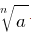

Означення: Коренем n-ого степеня з дійсного числа a називається таке число, n-й степінь якого дорівнює a.
Означення: Арифметичним коренем n-ого степеня з невідємного числа a називається таке невідємне число, n-й степінь якого дорівнює a.
Приклади знаходження модуля - корінь, n - показник кореня, a - підкореневий вираз.